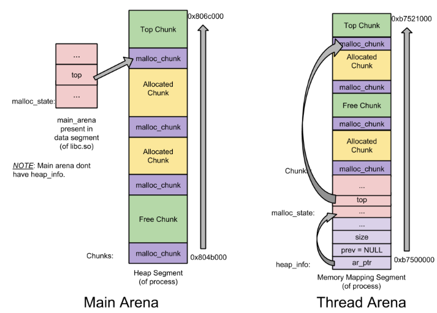

malloc and free Implementation
malloc
void *malloc(size_t size); allocates size bytes of memory, providing access to a process's heap. The heap is a construct in the C core library (commonly libc) that allows objects to obtain exclusive access to some space on the process's heap.
Normally, malloc allocates memory from the heap, and adjusts the size
of the heap as required, using sbrk. When allocating blocks of mem‐
ory larger than MMAP_THRESHOLD bytes, the glibc malloc implementation
allocates the memory as a private anonymous mapping using mmap.
MMAP_THRESHOLD is \(128\) kB by default, but is adjustable using mal‐
lopt(3).
Three most important steps are
* __malloc_hook checks if use user customized allocation
* arena_get is to check and select a valid heap memory area
* _int_malloc performs actual allocation with returned chunk
Three most important structures
* heap_info
* malloc_state
* malloc_chunk
void *
__libc_malloc (size_t bytes)
{
mstate ar_ptr;
void *victim;
void *(*hook) (size_t, const void *)
= atomic_forced_read (__malloc_hook);
if (__builtin_expect (hook != NULL, 0))
return (*hook)(bytes, RETURN_ADDRESS (0));
#if USE_TCACHE
/* int_free also calls request2size, be careful to not pad twice. */
size_t tbytes = request2size (bytes);
size_t tc_idx = csize2tidx (tbytes);
MAYBE_INIT_TCACHE ();
DIAG_PUSH_NEEDS_COMMENT;
if (tc_idx < mp_.tcache_bins
/*&& tc_idx < TCACHE_MAX_BINS*/ /* to appease gcc */
&& tcache
&& tcache->entries[tc_idx] != NULL)
{
return tcache_get (tc_idx);
}
DIAG_POP_NEEDS_COMMENT;
#endif
arena_get (ar_ptr, bytes);
victim = _int_malloc (ar_ptr, bytes);
/* Retry with another arena only if we were able to find a usable arena
before. */
if (!victim && ar_ptr != NULL)
{
LIBC_PROBE (memory_malloc_retry, 1, bytes);
ar_ptr = arena_get_retry (ar_ptr, bytes);
victim = _int_malloc (ar_ptr, bytes);
}
if (ar_ptr != NULL)
__libc_lock_unlock (ar_ptr->mutex);
assert (!victim || chunk_is_mmapped (mem2chunk (victim)) ||
ar_ptr == arena_for_chunk (mem2chunk (victim)));
return victim;
}
libc_hidden_def (__libc_malloc)
Hook by __malloc_hook
Hook can be used to intercept API invocation to redirect function invocations flow to user customized functions.
In malloc materialization, void (*__malloc_initialize_hook)(void) = my_init_hook; overrides libc defined hook function.
#include <stdio.h>
#include <malloc.h>
/* Prototypes for our hooks */
static void my_init_hook(void);
static void *my_malloc_hook(size_t, const void *);
/* Variables to save original hooks */
static void *(*old_malloc_hook)(size_t, const void *);
/* Override initializing hook from the C library */
void (*__malloc_initialize_hook)(void) = my_init_hook;
static void
my_init_hook(void)
{
old_malloc_hook = __malloc_hook;
__malloc_hook = my_malloc_hook;
}
static void *
my_malloc_hook(size_t size, const void *caller)
{
void *result;
/* Restore all old hooks */
__malloc_hook = old_malloc_hook;
/* Call recursively */
result = malloc(size);
/* Save underlying hooks */
old_malloc_hook = __malloc_hook;
/* printf() might call malloc(), so protect it too */
printf("malloc(%zu) called from %p returns %p\n",
size, caller, result);
/* Restore our own hooks */
__malloc_hook = my_malloc_hook;
return result;
}
arena_get
Arena is the alias of heap memory. It first locks an existing arena and goto inside this arena via arena_get2, that first tries to get a free arena from get_free_list, if failed, calls _int_new_arena to get a new arena.
Multiple arenas are sharable among threads.
When an arena is selected by a thread, the thread locks this arena then proceeds to arena_get2 to retrieve an arena returned to the user thread.
An arena overview is shown as below * Main arena: process launched arena
Main arena's heap_info is stored globally in libc.so, grown by sbrk
Main arena is mostly selected to increase cache hits.
- Thread arena: thread launched arena
Thread arena's heap_info is local.
Each thread arena maintains one heap, unless memory is exhausted and new heap is mmap to this thread arena

/* arena_get() acquires an arena and locks the corresponding mutex.
First, try the one last locked successfully by this thread. (This
is the common case and handled with a macro for speed.) Then, loop
once over the circularly linked list of arenas. If no arena is
readily available, create a new one. In this latter case, `size'
is just a hint as to how much memory will be required immediately
in the new arena. */
#define arena_get(ptr, size) do { \
ptr = thread_arena; \
arena_lock (ptr, size); \
} while (0)
#define arena_lock(ptr, size) do { \
if (ptr && !arena_is_corrupt (ptr)) \
__libc_lock_lock (ptr->mutex); \
else \
ptr = arena_get2 ((size), NULL); \
} while (0)
static mstate
internal_function
arena_get2 (size_t size, mstate avoid_arena)
{
mstate a;
static size_t narenas_limit;
a = get_free_list ();
if (a == NULL)
{
/* Nothing immediately available, so generate a new arena. */
if (narenas_limit == 0)
{
if (mp_.arena_max != 0)
narenas_limit = mp_.arena_max;
else if (narenas > mp_.arena_test)
{
int n = __get_nprocs ();
if (n >= 1)
narenas_limit = NARENAS_FROM_NCORES (n);
else
/* We have no information about the system. Assume two
cores. */
narenas_limit = NARENAS_FROM_NCORES (2);
}
}
repeat:;
size_t n = narenas;
/* NB: the following depends on the fact that (size_t)0 - 1 is a
very large number and that the underflow is OK. If arena_max
is set the value of arena_test is irrelevant. If arena_test
is set but narenas is not yet larger or equal to arena_test
narenas_limit is 0. There is no possibility for narenas to
be too big for the test to always fail since there is not
enough address space to create that many arenas. */
if (__glibc_unlikely (n <= narenas_limit - 1))
{
if (catomic_compare_and_exchange_bool_acq (&narenas, n + 1, n))
goto repeat;
a = _int_new_arena (size);
if (__glibc_unlikely (a == NULL))
catomic_decrement (&narenas);
}
else
a = reused_arena (avoid_arena);
}
return a;
}
struct malloc_state;
typedef struct malloc_state *mstate;
struct malloc_state
{
/* Serialize access. */
__libc_lock_define (, mutex);
/* Flags (formerly in max_fast). */
int flags;
/* Fastbins */
mfastbinptr fastbinsY[NFASTBINS];
/* Base of the topmost chunk -- not otherwise kept in a bin */
mchunkptr top;
/* The remainder from the most recent split of a small request */
mchunkptr last_remainder;
/* Normal bins packed as described above */
mchunkptr bins[NBINS * 2 - 2];
/* Bitmap of bins */
unsigned int binmap[BINMAPSIZE];
/* Linked list */
struct malloc_state *next;
/* Linked list for free arenas. Access to this field is serialized
by free_list_lock in arena.c. */
struct malloc_state *next_free;
/* Number of threads attached to this arena. 0 if the arena is on
the free list. Access to this field is serialized by
free_list_lock in arena.c. */
INTERNAL_SIZE_T attached_threads;
/* Memory allocated from the system in this arena. */
INTERNAL_SIZE_T system_mem;
INTERNAL_SIZE_T max_system_mem;
};
free_list is an arena list, returns result->next_free; to free_list as the next available mstate result. If not available, free_list = NULL.
/* Remove an arena from free_list. */
static mstate
get_free_list (void)
{
mstate replaced_arena = thread_arena;
mstate result = free_list;
if (result != NULL)
{
__libc_lock_lock (free_list_lock);
result = free_list;
if (result != NULL)
{
free_list = result->next_free;
/* The arena will be attached to this thread. */
assert (result->attached_threads == 0);
result->attached_threads = 1;
detach_arena (replaced_arena);
}
__libc_lock_unlock (free_list_lock);
if (result != NULL)
{
LIBC_PROBE (memory_arena_reuse_free_list, 1, result);
__libc_lock_lock (result->mutex);
thread_arena = result;
}
}
return result;
}
get_free_list fails, _int_new_arena gets invoked launching a new arena of mstate. One arena can maintain multiple heaps (usually just maintain one heap if memory is sufficient).
Two key steps:
* heap_info h = new_heap to get a new heap
* a = h->ar_ptr = (mstate) (h + 1); to get an arena from heap
static mstate
_int_new_arena (size_t size)
{
mstate a;
heap_info *h;
char *ptr;
unsigned long misalign;
h = new_heap (size + (sizeof (*h) + sizeof (*a) + MALLOC_ALIGNMENT),
mp_.top_pad);
if (!h)
{
/* Maybe size is too large to fit in a single heap. So, just try
to create a minimally-sized arena and let _int_malloc() attempt
to deal with the large request via mmap_chunk(). */
h = new_heap (sizeof (*h) + sizeof (*a) + MALLOC_ALIGNMENT, mp_.top_pad);
if (!h)
return 0;
}
a = h->ar_ptr = (mstate) (h + 1);
malloc_init_state (a);
a->attached_threads = 1;
/*a->next = NULL;*/
a->system_mem = a->max_system_mem = h->size;
/* Set up the top chunk, with proper alignment. */
ptr = (char *) (a + 1);
misalign = (unsigned long) chunk2mem (ptr) & MALLOC_ALIGN_MASK;
if (misalign > 0)
ptr += MALLOC_ALIGNMENT - misalign;
top (a) = (mchunkptr) ptr;
set_head (top (a), (((char *) h + h->size) - ptr) | PREV_INUSE);
LIBC_PROBE (memory_arena_new, 2, a, size);
mstate replaced_arena = thread_arena;
thread_arena = a;
__libc_lock_init (a->mutex);
__libc_lock_lock (list_lock);
/* Add the new arena to the global list. */
a->next = main_arena.next;
/* FIXME: The barrier is an attempt to synchronize with read access
in reused_arena, which does not acquire list_lock while
traversing the list. */
atomic_write_barrier ();
main_arena.next = a;
__libc_lock_unlock (list_lock);
__libc_lock_lock (free_list_lock);
detach_arena (replaced_arena);
__libc_lock_unlock (free_list_lock);
/* Lock this arena. NB: Another thread may have been attached to
this arena because the arena is now accessible from the
main_arena.next list and could have been picked by reused_arena.
This can only happen for the last arena created (before the arena
limit is reached). At this point, some arena has to be attached
to two threads. We could acquire the arena lock before list_lock
to make it less likely that reused_arena picks this new arena,
but this could result in a deadlock with
__malloc_fork_lock_parent. */
__libc_lock_lock (a->mutex);
return a;
}
/* A heap is a single contiguous memory region holding (coalesceable)
malloc_chunks. It is allocated with mmap() and always starts at an
address aligned to HEAP_MAX_SIZE. */
typedef struct _heap_info
{
mstate ar_ptr; /* Arena for this heap. */
struct _heap_info *prev; /* Previous heap. */
size_t size; /* Current size in bytes. */
size_t mprotect_size; /* Size in bytes that has been mprotected
PROT_READ|PROT_WRITE. */
/* Make sure the following data is properly aligned, particularly
that sizeof (heap_info) + 2 * SIZE_SZ is a multiple of
MALLOC_ALIGNMENT. */
char pad[-6 * SIZE_SZ & MALLOC_ALIGN_MASK];
} heap_info;
Below is the implementation of launching a new heap. The function returns (heap_info *) p2; that has the info about the allocated new heap.
GLROis used to read global variable, defined as#define GLRO(x) _##xALIGN_UPis used to, given a defined alignment value, output a number greater than or equal to the aligned memory valueMMAPis a Unix system call that maps files or devices into memory. used to mapping memory from user space to kernel space. IfaddrisNULL, then the kernel chooses the (page-aligned) address at which to create the mapping, otherwise, it takes whatever theaddris, such asaligned_heap_area.
The return is the mapped new addr pointer in the user space. In the usage below, it converts to (char *) first then, if succeeded, to (heap_info *) p2;
-
__munmapremoves any mappings for pages in the address range starting at addr and continuing forlenbytes -
__mprotectset read/write privilege of the pointed memoryp2plussize
In the usage below, it unmaps memory from pages if MAP_FAILED happens.
/* If consecutive mmap (0, HEAP_MAX_SIZE << 1, ...) calls return decreasing
addresses as opposed to increasing, new_heap would badly fragment the
address space. In that case remember the second HEAP_MAX_SIZE part
aligned to HEAP_MAX_SIZE from last mmap (0, HEAP_MAX_SIZE << 1, ...)
call (if it is already aligned) and try to reuse it next time. We need
no locking for it, as kernel ensures the atomicity for us - worst case
we'll call mmap (addr, HEAP_MAX_SIZE, ...) for some value of addr in
multiple threads, but only one will succeed. */
static char *aligned_heap_area;
/* Create a new heap. size is automatically rounded up to a multiple
of the page size. */
static heap_info *
internal_function
new_heap (size_t size, size_t top_pad)
{
size_t pagesize = GLRO (dl_pagesize);
char *p1, *p2;
unsigned long ul;
heap_info *h;
if (size + top_pad < HEAP_MIN_SIZE)
size = HEAP_MIN_SIZE;
else if (size + top_pad <= HEAP_MAX_SIZE)
size += top_pad;
else if (size > HEAP_MAX_SIZE)
return 0;
else
size = HEAP_MAX_SIZE;
size = ALIGN_UP (size, pagesize);
/* A memory region aligned to a multiple of HEAP_MAX_SIZE is needed.
No swap space needs to be reserved for the following large
mapping (on Linux, this is the case for all non-writable mappings
anyway). */
p2 = MAP_FAILED;
if (aligned_heap_area)
{
p2 = (char *) MMAP (aligned_heap_area, HEAP_MAX_SIZE, PROT_NONE,
MAP_NORESERVE);
aligned_heap_area = NULL;
if (p2 != MAP_FAILED && ((unsigned long) p2 & (HEAP_MAX_SIZE - 1)))
{
__munmap (p2, HEAP_MAX_SIZE);
p2 = MAP_FAILED;
}
}
if (p2 == MAP_FAILED)
{
p1 = (char *) MMAP (0, HEAP_MAX_SIZE << 1, PROT_NONE, MAP_NORESERVE);
if (p1 != MAP_FAILED)
{
p2 = (char *) (((unsigned long) p1 + (HEAP_MAX_SIZE - 1))
& ~(HEAP_MAX_SIZE - 1));
ul = p2 - p1;
if (ul)
__munmap (p1, ul);
else
aligned_heap_area = p2 + HEAP_MAX_SIZE;
__munmap (p2 + HEAP_MAX_SIZE, HEAP_MAX_SIZE - ul);
}
else
{
/* Try to take the chance that an allocation of only HEAP_MAX_SIZE
is already aligned. */
p2 = (char *) MMAP (0, HEAP_MAX_SIZE, PROT_NONE, MAP_NORESERVE);
if (p2 == MAP_FAILED)
return 0;
if ((unsigned long) p2 & (HEAP_MAX_SIZE - 1))
{
__munmap (p2, HEAP_MAX_SIZE);
return 0;
}
}
}
if (__mprotect (p2, size, PROT_READ | PROT_WRITE) != 0)
{
__munmap (p2, HEAP_MAX_SIZE);
return 0;
}
h = (heap_info *) p2;
h->size = size;
h->mprotect_size = size;
LIBC_PROBE (memory_heap_new, 2, h, h->size);
return h;
}
_int_malloc
malloc has a reserve of chunks doubly linked, of different sizes. Chunks inside the same bin have the same sizes (except for unsorted bins).
Given a valid mstate av, this function goes into
1. checks if arena is valid, if not valid, directly create a new chunk by sysmalloc and return
2. use a fast bin if match, then return
3. use a small bin if match, then return
4. if a small bin does not fit, consolidate fast bins via malloc_consolidate
5. Now inside the unsorted bin, for a small request, try to use last remainder chunk if it is the only chunk in unsorted bin; then return; if found an exact match, use it and return; if found a larger chunk, split it and put the remaining chunk to the unsorted bin; if found a small chunk, put it to a small bin
6. Still in the unsorted bin, for a large chunk request, split it trying to obtain an exact chunk size match and return; the remainder chunk is put to the unsorted bin
7. If all above steps fail, now start scanning large bins, split one, use the exact-match chunk and put the remainder chunk into the unsorted bin
8. Use the top chunk: If large enough, split off the chunk bordering the end of memory (held in av->top); the top chunk is treated as larger (and thus less well fitting) than any other available chunk since it can be extended to be as large as necessary (up to system limitations)
9. If reached this step, that means even the top chunk failed satisfying the chunk size; can either consolidate fast bins to obtain a large chunk or hand over to sysmalloc to directly allocate a huge chunk
About bins
* bin is a linked list structure recording free chunks
* unsorted bins: There is only 1 unsorted bin. Small and large chunks, when freed, end up in this bin. The primary purpose of this bin is to act as a cache layer (kind of) to speed up allocation and deallocation requests.
Chunks in this bin have various sizes.
* fast bins: There are 10 fast bins. Each of these bins maintains a single linked list. They are the first being searched.
* small bins: There are 62 small bins. Small bins are faster than large bins but slower than fast bins.
* large bins: There are 63 large bins. Each bin maintains a doubly-linked list. A particular large bin has chunks of different sizes, sorted in decreasing order.
A typical bin size config is |No. of Bins| Spacing| between bins| |-|-|-| |64 bins of size| 8| [ Small bins]| |32 bins of size| 64| [ Large bins]| |16 bins of size| 512| [ Large bins]| |8 bins of size | 4096| [ ... ] |4 bins of size | 32768| | |2 bins of size | 262144| | |1 bin of size |what's left| |
About chunks:
* chunks malloc_chunk* mchunkptr is the element in the doubly linked list named bin.
* top chunk: is the chunk which borders the top of an arena. While servicing malloc requests, it is used as the last resort. If still more size is required, it can grow using the sbrk system call.
* remainder chunk: the split chunk from a larger chunk
* last remainder chunk: is the chunk obtained from the last split. Sometimes, when exact size chunks are not available, bigger chunks are split into two. One part is returned to the user whereas the other becomes the last remainder chunk.
Purposes of some functions:
* __builtin_expect provides the compiler with branch prediction information for code flow optimization.
* alloc_perturb(char* p, size_t n) sets the n bytes to pointed to by p
* sysmalloc(INTERNAL_SIZE_T nb, mstate av) is invoked when there are no usable arenas; fall back to sysmalloc to get a chunk from mmap.
* malloc_consolidate merges nearby chunks in fast bins and puts them into the unsorted bin.
* set_inuse_bit_at_offset (victim, size); marks the chunk of the given size is now in use.
* remainder = chunk_at_offset (victim, nb); split a chunk into a remainder and an exact-fit chunk
Some key list operations:
* Inser a chunk into a bin via the bin's bk and fd
size_t remainder_size = size - nb;
mchunkptr remainder = chunk_at_offset (victim, nb);
unsorted_chunks (av)->bk = unsorted_chunks (av)->fd = remainder;
Full code is shown as below
struct malloc_chunk {
INTERNAL_SIZE_T mchunk_prev_size; /* Size of previous chunk, if it is free. */
INTERNAL_SIZE_T mchunk_size; /* Size in bytes, including overhead. */
struct malloc_chunk* fd; /* double links -- used only if this chunk is free. */
struct malloc_chunk* bk;
/* Only used for large blocks: pointer to next larger size. */
struct malloc_chunk* fd_nextsize; /* double links -- used only if this chunk is free. */
struct malloc_chunk* bk_nextsize;
};
typedef struct malloc_chunk* mchunkptr;
static void *
_int_malloc (mstate av, size_t bytes)
{
INTERNAL_SIZE_T nb; /* normalized request size */
unsigned int idx; /* associated bin index */
mbinptr bin; /* associated bin */
mchunkptr victim; /* inspected/selected chunk */
INTERNAL_SIZE_T size; /* its size */
int victim_index; /* its bin index */
mchunkptr remainder; /* remainder from a split */
unsigned long remainder_size; /* its size */
unsigned int block; /* bit map traverser */
unsigned int bit; /* bit map traverser */
unsigned int map; /* current word of binmap */
mchunkptr fwd; /* misc temp for linking */
mchunkptr bck; /* misc temp for linking */
const char *errstr = NULL;
/*
Convert request size to internal form by adding SIZE_SZ bytes
overhead plus possibly more to obtain necessary alignment and/or
to obtain a size of at least MINSIZE, the smallest allocatable
size. Also, checked_request2size traps (returning 0) request sizes
that are so large that they wrap around zero when padded and
aligned.
*/
checked_request2size (bytes, nb);
/* There are no usable arenas. Fall back to sysmalloc to get a chunk from
mmap. */
if (__glibc_unlikely (av == NULL))
{
void *p = sysmalloc (nb, av);
if (p != NULL)
alloc_perturb (p, bytes);
return p;
}
/*
If the size qualifies as a fastbin, first check corresponding bin.
This code is safe to execute even if av is not yet initialized, so we
can try it without checking, which saves some time on this fast path.
*/
if ((unsigned long) (nb) <= (unsigned long) (get_max_fast ()))
{
idx = fastbin_index (nb);
mfastbinptr *fb = &fastbin (av, idx);
mchunkptr pp = *fb;
do
{
victim = pp;
if (victim == NULL)
break;
}
while ((pp = catomic_compare_and_exchange_val_acq (fb, victim->fd, victim))
!= victim);
if (victim != 0)
{
if (__builtin_expect (fastbin_index (chunksize (victim)) != idx, 0))
{
errstr = "malloc(): memory corruption (fast)";
errout:
malloc_printerr (check_action, errstr, chunk2mem (victim), av);
return NULL;
}
check_remalloced_chunk (av, victim, nb);
void *p = chunk2mem (victim);
alloc_perturb (p, bytes);
return p;
}
}
/*
If a small request, check regular bin. Since these "smallbins"
hold one size each, no searching within bins is necessary.
(For a large request, we need to wait until unsorted chunks are
processed to find best fit. But for small ones, fits are exact
anyway, so we can check now, which is faster.)
*/
if (in_smallbin_range (nb))
{
idx = smallbin_index (nb);
bin = bin_at (av, idx);
if ((victim = last (bin)) != bin)
{
if (victim == 0) /* initialization check */
malloc_consolidate (av);
else
{
bck = victim->bk;
if (__glibc_unlikely (bck->fd != victim))
{
errstr = "malloc(): smallbin double linked list corrupted";
goto errout;
}
set_inuse_bit_at_offset (victim, nb);
bin->bk = bck;
bck->fd = bin;
if (av != &main_arena)
victim->size |= NON_MAIN_ARENA;
check_malloced_chunk (av, victim, nb);
void *p = chunk2mem (victim);
alloc_perturb (p, bytes);
return p;
}
}
}
/*
If this is a large request, consolidate fastbins before continuing.
While it might look excessive to kill all fastbins before
even seeing if there is space available, this avoids
fragmentation problems normally associated with fastbins.
Also, in practice, programs tend to have runs of either small or
large requests, but less often mixtures, so consolidation is not
invoked all that often in most programs. And the programs that
it is called frequently in otherwise tend to fragment.
*/
else
{
idx = largebin_index (nb);
if (have_fastchunks (av))
malloc_consolidate (av);
}
/*
Process recently freed or remaindered chunks, taking one only if
it is exact fit, or, if this a small request, the chunk is remainder from
the most recent non-exact fit. Place other traversed chunks in
bins. Note that this step is the only place in any routine where
chunks are placed in bins.
The outer loop here is needed because we might not realize until
near the end of malloc that we should have consolidated, so must
do so and retry. This happens at most once, and only when we would
otherwise need to expand memory to service a "small" request.
*/
for (;; )
{
int iters = 0;
while ((victim = unsorted_chunks (av)->bk) != unsorted_chunks (av))
{
bck = victim->bk;
if (__builtin_expect (victim->size <= 2 * SIZE_SZ, 0)
|| __builtin_expect (victim->size > av->system_mem, 0))
malloc_printerr (check_action, "malloc(): memory corruption",
chunk2mem (victim), av);
size = chunksize (victim);
/*
If a small request, try to use last remainder if it is the
only chunk in unsorted bin. This helps promote locality for
runs of consecutive small requests. This is the only
exception to best-fit, and applies only when there is
no exact fit for a small chunk.
*/
if (in_smallbin_range (nb) &&
bck == unsorted_chunks (av) &&
victim == av->last_remainder &&
(unsigned long) (size) > (unsigned long) (nb + MINSIZE))
{
/* split and reattach remainder */
remainder_size = size - nb;
remainder = chunk_at_offset (victim, nb);
unsorted_chunks (av)->bk = unsorted_chunks (av)->fd = remainder;
av->last_remainder = remainder;
remainder->bk = remainder->fd = unsorted_chunks (av);
if (!in_smallbin_range (remainder_size))
{
remainder->fd_nextsize = NULL;
remainder->bk_nextsize = NULL;
}
set_head (victim, nb | PREV_INUSE |
(av != &main_arena ? NON_MAIN_ARENA : 0));
set_head (remainder, remainder_size | PREV_INUSE);
set_foot (remainder, remainder_size);
check_malloced_chunk (av, victim, nb);
void *p = chunk2mem (victim);
alloc_perturb (p, bytes);
return p;
}
/* remove from unsorted list */
unsorted_chunks (av)->bk = bck;
bck->fd = unsorted_chunks (av);
/* Take now instead of binning if exact fit */
if (size == nb)
{
set_inuse_bit_at_offset (victim, size);
if (av != &main_arena)
victim->size |= NON_MAIN_ARENA;
check_malloced_chunk (av, victim, nb);
void *p = chunk2mem (victim);
alloc_perturb (p, bytes);
return p;
}
/* place chunk in bin */
if (in_smallbin_range (size))
{
victim_index = smallbin_index (size);
bck = bin_at (av, victim_index);
fwd = bck->fd;
}
else
{
victim_index = largebin_index (size);
bck = bin_at (av, victim_index);
fwd = bck->fd;
/* maintain large bins in sorted order */
if (fwd != bck)
{
/* Or with inuse bit to speed comparisons */
size |= PREV_INUSE;
/* if smaller than smallest, bypass loop below */
assert ((bck->bk->size & NON_MAIN_ARENA) == 0);
if ((unsigned long) (size) < (unsigned long) (bck->bk->size))
{
fwd = bck;
bck = bck->bk;
victim->fd_nextsize = fwd->fd;
victim->bk_nextsize = fwd->fd->bk_nextsize;
fwd->fd->bk_nextsize = victim->bk_nextsize->fd_nextsize = victim;
}
else
{
assert ((fwd->size & NON_MAIN_ARENA) == 0);
while ((unsigned long) size < fwd->size)
{
fwd = fwd->fd_nextsize;
assert ((fwd->size & NON_MAIN_ARENA) == 0);
}
if ((unsigned long) size == (unsigned long) fwd->size)
/* Always insert in the second position. */
fwd = fwd->fd;
else
{
victim->fd_nextsize = fwd;
victim->bk_nextsize = fwd->bk_nextsize;
fwd->bk_nextsize = victim;
victim->bk_nextsize->fd_nextsize = victim;
}
bck = fwd->bk;
}
}
else
victim->fd_nextsize = victim->bk_nextsize = victim;
}
mark_bin (av, victim_index);
victim->bk = bck;
victim->fd = fwd;
fwd->bk = victim;
bck->fd = victim;
#define MAX_ITERS 10000
if (++iters >= MAX_ITERS)
break;
}
/*
If a large request, scan through the chunks of current bin in
sorted order to find smallest that fits. Use the skip list for this.
*/
if (!in_smallbin_range (nb))
{
bin = bin_at (av, idx);
/* skip scan if empty or largest chunk is too small */
if ((victim = first (bin)) != bin &&
(unsigned long) (victim->size) >= (unsigned long) (nb))
{
victim = victim->bk_nextsize;
while (((unsigned long) (size = chunksize (victim)) <
(unsigned long) (nb)))
victim = victim->bk_nextsize;
/* Avoid removing the first entry for a size so that the skip
list does not have to be rerouted. */
if (victim != last (bin) && victim->size == victim->fd->size)
victim = victim->fd;
remainder_size = size - nb;
unlink (av, victim, bck, fwd);
/* Exhaust */
if (remainder_size < MINSIZE)
{
set_inuse_bit_at_offset (victim, size);
if (av != &main_arena)
victim->size |= NON_MAIN_ARENA;
}
/* Split */
else
{
remainder = chunk_at_offset (victim, nb);
/* We cannot assume the unsorted list is empty and therefore
have to perform a complete insert here. */
bck = unsorted_chunks (av);
fwd = bck->fd;
if (__glibc_unlikely (fwd->bk != bck))
{
errstr = "malloc(): corrupted unsorted chunks";
goto errout;
}
remainder->bk = bck;
remainder->fd = fwd;
bck->fd = remainder;
fwd->bk = remainder;
if (!in_smallbin_range (remainder_size))
{
remainder->fd_nextsize = NULL;
remainder->bk_nextsize = NULL;
}
set_head (victim, nb | PREV_INUSE |
(av != &main_arena ? NON_MAIN_ARENA : 0));
set_head (remainder, remainder_size | PREV_INUSE);
set_foot (remainder, remainder_size);
}
check_malloced_chunk (av, victim, nb);
void *p = chunk2mem (victim);
alloc_perturb (p, bytes);
return p;
}
}
/*
Search for a chunk by scanning bins, starting with next largest
bin. This search is strictly by best-fit; i.e., the smallest
(with ties going to approximately the least recently used) chunk
that fits is selected.
The bitmap avoids needing to check that most blocks are nonempty.
The particular case of skipping all bins during warm-up phases
when no chunks have been returned yet is faster than it might look.
*/
++idx;
bin = bin_at (av, idx);
block = idx2block (idx);
map = av->binmap[block];
bit = idx2bit (idx);
for (;; )
{
/* Skip rest of block if there are no more set bits in this block. */
if (bit > map || bit == 0)
{
do
{
if (++block >= BINMAPSIZE) /* out of bins */
goto use_top;
}
while ((map = av->binmap[block]) == 0);
bin = bin_at (av, (block << BINMAPSHIFT));
bit = 1;
}
/* Advance to bin with set bit. There must be one. */
while ((bit & map) == 0)
{
bin = next_bin (bin);
bit <<= 1;
assert (bit != 0);
}
/* Inspect the bin. It is likely to be non-empty */
victim = last (bin);
/* If a false alarm (empty bin), clear the bit. */
if (victim == bin)
{
av->binmap[block] = map &= ~bit; /* Write through */
bin = next_bin (bin);
bit <<= 1;
}
else
{
size = chunksize (victim);
/* We know the first chunk in this bin is big enough to use. */
assert ((unsigned long) (size) >= (unsigned long) (nb));
remainder_size = size - nb;
/* unlink */
unlink (av, victim, bck, fwd);
/* Exhaust */
if (remainder_size < MINSIZE)
{
set_inuse_bit_at_offset (victim, size);
if (av != &main_arena)
victim->size |= NON_MAIN_ARENA;
}
/* Split */
else
{
remainder = chunk_at_offset (victim, nb);
/* We cannot assume the unsorted list is empty and therefore
have to perform a complete insert here. */
bck = unsorted_chunks (av);
fwd = bck->fd;
if (__glibc_unlikely (fwd->bk != bck))
{
errstr = "malloc(): corrupted unsorted chunks 2";
goto errout;
}
remainder->bk = bck;
remainder->fd = fwd;
bck->fd = remainder;
fwd->bk = remainder;
/* advertise as last remainder */
if (in_smallbin_range (nb))
av->last_remainder = remainder;
if (!in_smallbin_range (remainder_size))
{
remainder->fd_nextsize = NULL;
remainder->bk_nextsize = NULL;
}
set_head (victim, nb | PREV_INUSE |
(av != &main_arena ? NON_MAIN_ARENA : 0));
set_head (remainder, remainder_size | PREV_INUSE);
set_foot (remainder, remainder_size);
}
check_malloced_chunk (av, victim, nb);
void *p = chunk2mem (victim);
alloc_perturb (p, bytes);
return p;
}
}
use_top:
/*
If large enough, split off the chunk bordering the end of memory
(held in av->top). Note that this is in accord with the best-fit
search rule. In effect, av->top is treated as larger (and thus
less well fitting) than any other available chunk since it can
be extended to be as large as necessary (up to system
limitations).
We require that av->top always exists (i.e., has size >=
MINSIZE) after initialization, so if it would otherwise be
exhausted by current request, it is replenished. (The main
reason for ensuring it exists is that we may need MINSIZE space
to put in fenceposts in sysmalloc.)
*/
victim = av->top;
size = chunksize (victim);
if ((unsigned long) (size) >= (unsigned long) (nb + MINSIZE))
{
remainder_size = size - nb;
remainder = chunk_at_offset (victim, nb);
av->top = remainder;
set_head (victim, nb | PREV_INUSE |
(av != &main_arena ? NON_MAIN_ARENA : 0));
set_head (remainder, remainder_size | PREV_INUSE);
check_malloced_chunk (av, victim, nb);
void *p = chunk2mem (victim);
alloc_perturb (p, bytes);
return p;
}
/* When we are using atomic ops to free fast chunks we can get
here for all block sizes. */
else if (have_fastchunks (av))
{
malloc_consolidate (av);
/* restore original bin index */
if (in_smallbin_range (nb))
idx = smallbin_index (nb);
else
idx = largebin_index (nb);
}
/*
Otherwise, relay to handle system-dependent cases
*/
else
{
void *p = sysmalloc (nb, av);
if (p != NULL)
alloc_perturb (p, bytes);
return p;
}
}
}